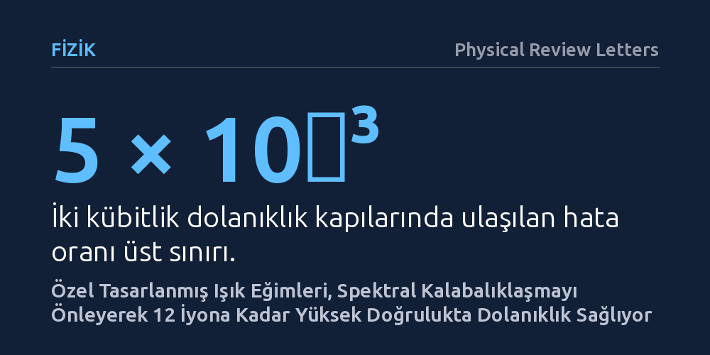

FIZIK · Physical Review Letters · 2026-10-24
Araştırmacılar, tuzaklanmış iyon kuantum işlemcilerinde çok sayıda iyonun yol açtığı titreşim karmaşasını çözmek için enine yapılandırılmış ışık eğimleri kullandı. Tek bir tuzakta 12 iyona kadar dizilimlerde, binde beşin altındaki hata oranıyla yüksek doğrulukta iki kübitlik dolanıklık kapıları çalıştırıldı.
Kuantum bilgisayarlarında iyon sayısı arttıkça dolanıklık kalitesinin kaçınılmaz olarak bozulduğu kabulünü kırarak, tek bir tuzakta daha fazla kübitle yüksek doğrulukta işlem yapılabileceğini göstermektedir.

Kuantum bilgisayarlarının en umut vadeden donanım mimarilerinden biri, elektriksel alanlarla boşlukta asılı tutulan yüklü atomlar, yani tuzaklanmış iyonlardır. Bu sistemlerde her bir iyon bir kuantum biti (kübit) olarak işlev görür. İyonlar arasındaki bilgi aktarımı ve kuantum dolanıklığı, iyonların aynı tuzak içinde paylaştığı ortak titreşim hareketleri üzerinden lazer ışınlarıyla kurulur. Ancak işlemciyi büyütmek ve daha fazla iyonu tek bir tuzağa eklemek istendiğinde fiziksel bir darboğaz ortaya çıkar.
Tuzağa eklenen her yeni iyon, sistemin kolektif hareket modlarının sayısını artırır. Çok sayıda iyon bir araya geldiğinde bu hareket frekansları birbirine aşırı yaklaşarak spektrumda sıkışır; bu duruma 'spektral kalabalıklaşma' denir. Dolanıklık oluşturmak için gönderilen lazer darbeleri, yalnızca hedeflenen titreşim modunu değil, frekansı ona çok yakın olan diğer seyirci modları da istenmeyen şekilde uyarır. Bu durum, iki kübit arasındaki dolanıklık kapılarının doğruluğunu belirgin biçimde düşürür ve hesaplama hatalarını artırır.
Araştırmacılar bu kalabalıklaşma sorununu aşmak için lazer ışığının iyonlara uygulanış biçimini kökten değiştirdi. Geleneksel yöntemlerde lazer ışınları genellikle iyon zincirinin uzandığı eksen boyunca doğrudan itme kuvveti uygularken, bu çalışmada ışığın yayılma doğrultusuna dik (enine) düzlemde zamana bağlı olarak değişen yapılandırılmış bir ışık kuvveti kullanıldı. Bu kuvvet, hedeflenen iyon üzerinde hassas bir ışık eğimi oluşturur.
Geliştirilen bu yöntem, iyonların kuantum durumlarına bağlı bir geometrik faz kapısı mekanizmasıyla çalışır. Sistemin en büyük avantajı, ışık kuvvetinin lazerin ilerleme yönüne dik uygulanması sayesinde tek tek iyonlara adresleme kabiliyetini korurken, komşu titreşim modlarına olan istenmeyen eşleşmeleri belirgin biçimde bastırmasıdır. Ayrıca yöntem, kübit durumlarının lazer alanında farklı oranlarda enerji kayması (farklı AC Stark kayması) yaşaması koşuluyla, farklı kuantum kodlama biçimleriyle de uyumlu çalışabilmektedir.
Araştırma ekibi geliştirdikleri kuramsal yaklaşımı laboratuvarda test etmek amacıyla tek bir potansiyel kuyusu içinde 12 adede kadar kalsiyum iyonundan oluşan doğrusal kristaller hazırladı. Farklı uzunluklardaki iyon dizilimlerinde iki kübitlik mantık kapıları çalıştırılarak kapıların hata oranları sistematik olarak ölçüldü. Deneyler, spektral kalabalıklaşmanın en şiddetli hissedildiği 12 iyonluk kristallerde dahi kapı performansının korunduğunu gösterdi.
Elde edilen sonuçlara göre, iki kübitlik dolanıklık kapılarında hata oranı 5 × 10⁻³ (yani binde beş) seviyesinin altında tutuldu. Bu oran, yüzde 99,5'in üzerinde bir kapı doğruluğuna karşılık gelmektedir. Deneyde elde edilen bu yüksek doğruluk, iyon sayısı arttığında kaçınılmaz görülen performans kaybının, ışık alanlarının geometrisi doğru tasarlanarak engellenebileceğini deneysel olarak kanıtladı.
Bu bulgu, tuzaklanmış iyon mimarisine dayalı kuantum bilgisayarların ölçeklenmesinde kritik bir pratik engeli hafifletmektedir. Bugüne kadar birçok araştırma grubu, kalabalıklaşma sorunundan kaçınmak için iyonları çok küçük gruplara bölüp farklı bölgeler arasında taşımayı veya karmaşık optik düzenekler kurmayı deniyordu. Tek bir tuzak kuyusunda 12 iyonla yüksek doğrulukta kapı çalıştırılabilmesi, birim işlemci modülünün kapasitesini doğrudan artırma potansiyeline sahiptir.
Yine de çalışmanın getirdiği çözümün sınırlarını unutmamak gerekir. Gösterim 12 iyonla sınırlıdır ve onlarca ya da yüzlerce iyonluk devasa zincirlerde lazer faz gürültüsü ve ısınma gibi diğer çevresel etkilerin nasıl davranacağı henüz bilinmemektedir. Buna rağmen, yapılandırılmış ışık eğimlerinin sunduğu hata kontrolü, kuantum hata düzeltme kodlarının gerektirdiği yüksek doğruluk eşiklerine ulaşma yolunda somut ve uygulanabilir bir basamak sunmaktadır.